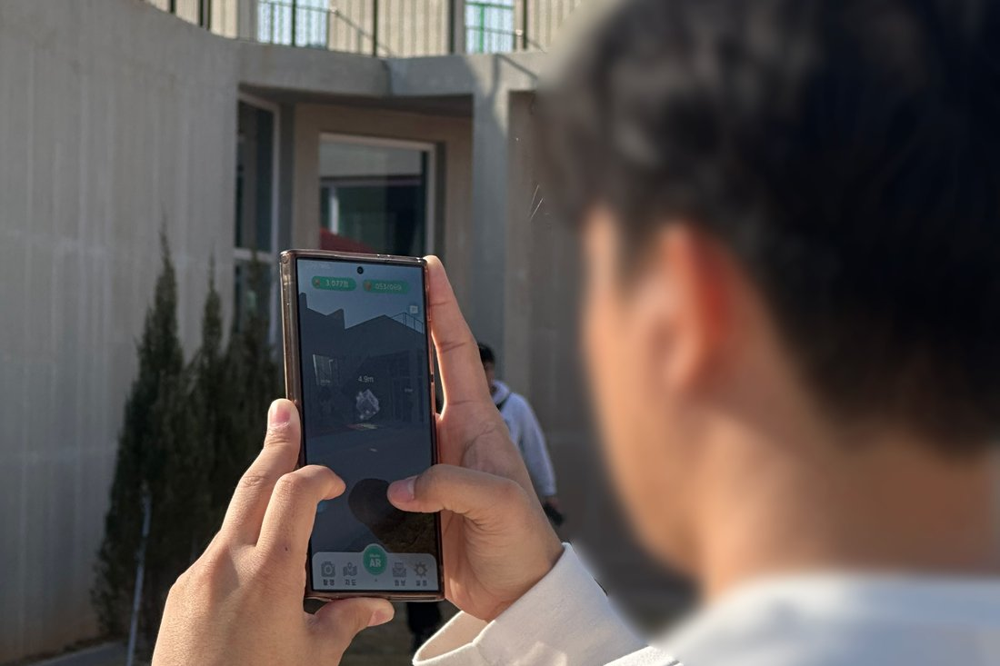

참가자가 스마트폰으로 행사장 곳곳에 숨은 AR 미션을 찾고 퀴즈를 풀며 디지털 스탬프를 모으는 프로그램입니다. 별도 앱 없이 QR코드로 웹에서 바로 참여하고, 꼭 보여 주고 싶은 부스와 공간을 미션 지점으로 이어 참가자가 행사장을 끝까지 둘러보게 만듭니다. 메이커팀이 행사 콘셉트에 맞춰 미션을 기획하고 현장 운영까지 맡습니다.
가능한 프로그램 구성
- 행사 주제에 맞춘 퀴즈와 AR 보물찾기
- 주요 부스와 전시 공간을 잇는 방문 미션
- 미션을 마치면 받는 디지털 스탬프
- 개인 참여형 투어 또는 팀 대항 미션
- AI 사진 채점 미션
이런 행사에 좋아요
- 지역 축제·관광 행사
- 박람회·전시회
- 브랜드 팝업·프로모션
- 기업 워크숍·팀빌딩
진행 순서
- 기획: 행사 콘셉트에 맞춘 체험 프로그램 기획
- 콘텐츠: AR 미션·퀴즈·스탬프 투어·팀 대항전 구성
- 시스템: 모바일 웹 참여 페이지 구축과 행사 맞춤 설정
- 운영: 현장 운영 지원, 실시간 랭킹, 경품 추첨, 수료증 발급
- 결과: 참여 데이터 집계와 결과보고서
문의 때 알려 주시면 좋아요
- 행사 장소와 일정
- 예상 참가 인원
- 참가자가 꼭 들렀으면 하는 구역과 부스
- 개인 참여인지 팀 참여인지
- 완주 혜택(경품) 유무
자주 묻는 질문
참가자는 어떻게 참여하나요?
스마트폰만 있으면 앱 설치 없이 QR코드로 웹에서 바로 참여합니다.
행사에서는 어떻게 활용하나요?
보여 주고 싶은 장소나 콘텐츠를 미션에 담습니다. 박람회라면 부스 전시물을 보고 답을 찾는 퀴즈를, 지역 축제라면 행사장 곳곳에 AR 보물을 두어 평소 지나치기 쉬운 공간까지 둘러보게 할 수 있습니다.
행사 목적에 따라 구성이 달라지나요?
부스 방문을 늘리려면 해당 부스를 스탬프 지점으로 잇고, 전시 내용을 기억하게 하려면 현장에서 직접 봐야 답할 수 있는 퀴즈를 넣습니다. 참가자끼리 협력하게 하려면 팀원이 단서를 나눠 찾고 함께 답을 맞히는 미션으로 짭니다.